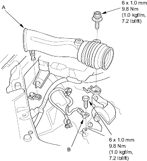
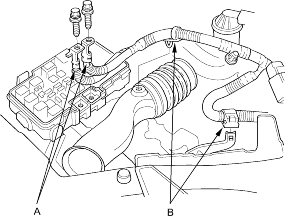
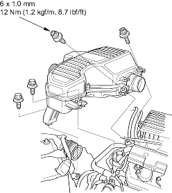

- Install the battery base.
- Install the intake air duct (A) and ground cable (B).

- Install the battery cable (A) on the under-hood fuse/relay box, then install the harness clamps (B).

- Install the intake resonator.

- Clean the battery posts and cable terminals with sandpaper, then assemble them and apply grease to prevent corrosion.
- Move the shift lever to each gear and verify that the A/T gear position indicator, follows the transmission range switch (A/T, Honda multi matic).
- Check that the transmission shifts into gear smoothly (M/T).
- Inspect for fuel leaks. Turn ON (II) the ignition switch (do not operate the starter) so that the fuel pump runs for approximately 2 seconds and pressurises the fuel line. Repeat this operation 2 or 3 times, then check for fuel leakage at any point in the fuel line.
- Refill the engine with engine oil (see page 8-5).
- Refill the transmission with fluid: